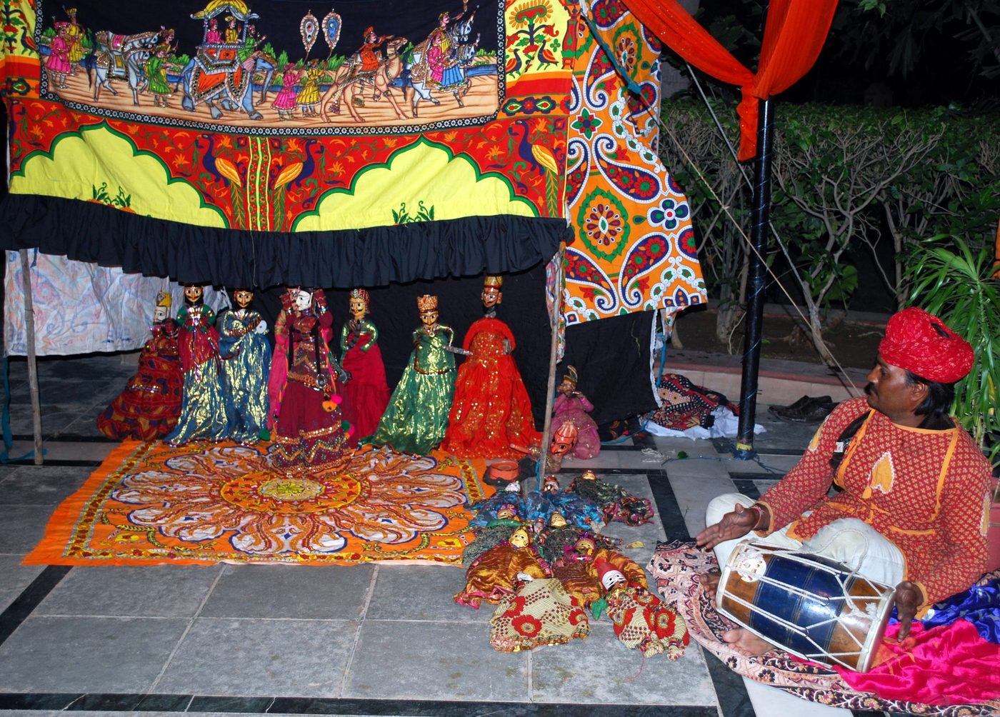

Chapter 19: Theatre Traditions¶
India’s theatre is as old as its literature and as varied as its languages. Its oldest layer, the Sanskrit drama of the classical period, survives as literature and as theory, but only one tradition, the Kūṭiyāṭṭam of Kerala, still performs it; how the plays were staged, and what Kūṭiyāṭṭam can and cannot tell us about that, are the first concerns here, followed by the puppet theatres and the modern theatre of the nineteenth to twenty-first centuries. Sanskrit drama as literature is treated in Volume 8 of this series, Kāvya Kalpalatā; here the emphasis is on performance. The regional popular theatres are described in Chapter 20, the dance-dramas of Kerala, Andhra and Assam in Chapters 17 and 18, and ritual and folk performance in Chapter 21.
19.1 Sanskrit Drama¶
19.1.1 Conventions¶
Sanskrit drama, as described in the Nāṭyaśāstra (Chapter 2) and practised by the playwrights of the first millennium CE, had distinctive conventions. Plays opened with a benediction and a prologue in which the director (sūtradhāra) introduced the play and the author. They mixed languages: kings, Brahmins and other high-status men spoke Sanskrit, while women, children and men of low status spoke Prakrit dialects, so that the social hierarchy was audible. They mixed prose dialogue with verse, sung or recited. They were divided into acts, with interludes (praveśaka, viṣkambhaka) in which minor characters reported events not shown on stage. The theory forbade the representation on stage of certain actions — death, battle, eating, sleeping and some others — which were reported rather than shown, and the great plays ended in the fulfilment of the hero’s aim rather than in catastrophe; “tragedy” in the Greek sense was not a Sanskrit genre. The vidūṣaka, the hero’s Brahmin jester, was a stock comic figure (Keith 1924; Raghavan 1993).
19.1.2 The dramatists¶
The earliest Sanskrit dramas of which fragments survive are Buddhist plays by Aśvaghoṣa (first or second century CE), found in manuscripts from Central Asia. Of the playwrights whose works survive complete, the most important are (Keith 1924):
- Bhāsa.
- Known for centuries only by reputation — Kālidāsa names him as a famous predecessor — Bhāsa preceded Kālidāsa, though his date is uncertain. In 1909–10 T. Gaṇapati Śāstrī found in Kerala manuscripts of thirteen anonymous plays which he attributed to Bhāsa and published from 1912. The attribution remains debated: the plays may be acting versions transmitted and adapted by the Cākyār actors of Kerala. They include Svapnavāsavadatta, a romantic drama of King Udayana; Pratijñāyaugandharāyaṇa, a play of political intrigue; and short plays on episodes of the Mahābhārata, among them Ūrubhaṅga, which shows the dying Duryodhana on stage, an exception to the convention against showing death.
- Kālidāsa
- (c. fourth–fifth century CE). The greatest Sanskrit poet wrote three plays: the Mālavikāgnimitra, a court comedy about King Agnimitra and the dancer Mālavikā (Chapter 12); the Vikramorvaśīya, on King Purūravas and the nymph Urvaśī; and the Abhijñānaśākuntala, the story of King Duṣyanta and Śakuntalā, whose fourth act, in which Śakuntalā leaves her foster-father’s hermitage, an anonymous traditional verse singles out as the finest thing in all literature.
- Śūdraka
- (third–fifth century CE). The Mṛcchakaṭika (“The Little Clay Cart”), a ten-act prakaraṇa, tells of the love of the poor Brahmin merchant Cārudatta and the courtesan Vasantasenā against a background of gamblers, thieves, a corrupt royal brother-in-law, a trial and a political revolution; it is the liveliest picture of urban society in Sanskrit drama.
- Viśākhadatta
- (date uncertain; proposals range from the fifth to the ninth century). The Mudrārākṣasa is a political drama of the struggle between the ministers Cāṇakya and Rākṣasa.
- Harṣa
- (r. 606–647), king of Kanauj, is credited with two court comedies, Ratnāvalī and Priyadarśikā, and the Buddhist drama Nāgānanda.
- Bhavabhūti
- (early eighth century) wrote the Mālatīmādhava and the Uttararāmacarita, which dramatises Rāma’s banishment of Sītā with a depth of pathos (karuṇa) that later critics admired.
- Later playwrights.
- The tradition was continued by such works as the Veṇīsaṃhāra of Bhaṭṭa Nārāyaṇa, the Bālarāmāyaṇa and the Prakrit Karpūramañjarī of Rājaśekhara (c. 900), and the allegorical Prabodhacandrodaya of Kṛṣṇamiśra (eleventh century), and Sanskrit plays were written until modern times, increasingly as literary works rather than for performance.
19.1.3 Four plays¶
A brief look at four plays shows the range of the classical theatre. Kālidāsa’s Abhijñānaśākuntala (“Śakuntalā recognised by a token”) opens with King Duṣyanta, out hunting, entering a hermitage and falling in love with Śakuntalā, the foster-daughter of the sage Kaṇva, whom he first observes as she tries to escape a bee. They marry secretly, and the king returns to his capital, leaving her his signet ring. The irascible sage Durvāsas, neglected by the distracted Śakuntalā, curses her: her husband will forget her until he sees a token. In the fourth act, the most celebrated in Sanskrit drama, Śakuntalā takes leave of the hermitage, its trees, its creepers and its fawn; at court the king, under the curse, rejects her, for she has lost the ring. When a fisherman finds the ring in a fish, the king’s memory returns, and after long remorse he is reunited with Śakuntalā and their son in a celestial hermitage. The play’s blend of love, nature and pathos made it the most famous Sanskrit work in Europe after William Jones’s English translation of 1789, which Goethe and many others admired (Keith 1924).
Śūdraka’s Mṛcchakaṭika could hardly be more different. Its ten acts move between the house of the impoverished Brahmin Cārudatta, the mansion of the wealthy courtesan Vasantasenā, the streets of Ujjayinī and the court of law, with a gambler who becomes a Buddhist monk, a thief who steals for love, a vain and brutal royal brother-in-law, and a revolution that overthrows the king. Its humour, its realism and its sympathy for people of every class have made it a favourite of modern directors, who have staged it in many languages.
Bhavabhūti’s Uttararāmacarita takes up the most painful episode of the Rāma story, his banishment of the pregnant Sītā in deference to public opinion. In its third act Sītā, made invisible by the grace of the river goddess, watches Rāma as he revisits the forest where they once lived together and laments her loss; she hears his grief and he feels her presence, but they cannot meet. Unlike the epic, the play ends in reconciliation, through a play-within-the-play. Later critics regarded it as the supreme expression of the pathetic rasa (karuṇa), and Bhavabhūti himself declared that pathos is the one rasa of which the others are transformations.
Harṣa’s Nāgānanda (“The Joy of the Serpents”) is a Buddhist drama. Its hero, the prince Jīmūtavāhana, offers his own body to the divine bird Garuḍa to save the serpent who was to be Garuḍa’s victim that day, and is restored to life by the goddess Gaurī. Its blend of romantic comedy in the first acts with self-sacrifice in the last, and its religious inclusiveness, made it one of the few plays to enter the Kūṭiyāṭṭam repertoire (below). Together these plays show that the classical theatre could be courtly or urban, comic or tragic in mood, Hindu or Buddhist in inspiration, and that it addressed audiences who appreciated both poetry and spectacle (Keith 1924; Raghavan 1993).
19.1.4 Types of play¶
The Nāṭyaśāstra and Dhanañjaya’s Daśarūpaka (late tenth century) classify plays into ten types (rūpaka) according to the source of the plot, the type of hero, the dominant rasa and the number of acts (Table 19.1). Later writers added a large number of “minor” types (uparūpaka), among them the nāṭikā, a four-act court comedy such as Harṣa’s Ratnāvalī, and the saṭṭaka, written entirely in Prakrit, such as Rājaśekhara’s Karpūramañjarī; several uparūpakas were forms of dance-drama and song (Keith 1924).
| Type | Acts | Characteristics |
|---|---|---|
| nāṭaka | 5–10 | Well-known story; royal or divine hero; love or heroism dominant (e.g. Abhijñānaśākuntala) |
| prakaraṇa | 5–10 | Invented story; hero a Brahmin, minister or merchant; heroine may be a courtesan (e.g. Mṛcchakaṭika) |
| samavakāra | 3 | Gods and demons; several heroes; tumult and deceit |
| ḍima | 4 | Violent action involving gods, demons and other beings |
| īhāmṛga | 4 | A hero’s pursuit of a divine woman, with conflict |
| vyāyoga | 1 | A martial episode not concerned with love |
| aṅka (utsṛṣṭikāṅka) | 1 | Pathos; lamentation after battle |
| bhāṇa | 1 | Monologue of a rake (viṭa) addressing imaginary companions |
| prahasana | 1 | Farce satirising ascetics, Brahmins and others |
| vīthī | 1 | A short piece for one or two characters |
19.1.5 The structure of the plot¶
Sanskrit dramaturgy analysed the plot of a full play in three overlapping ways. The hero’s action passes through five stages (avasthā): beginning (ārambha), effort (prayatna), prospect of success (prāptyāśā), certainty of success (niyatāpti) and attainment of the goal (phalāgama). The plot consists of five elements (arthaprakṛti): the seed (bīja) from which the action grows, the drop (bindu) that carries it forward after interruptions, the extended episode (patākā), the brief episode (prakarī) and the denouement (kārya). And the play is divided into five junctures (sandhi) — opening (mukha), progression (pratimukha), development (garbha), pause or crisis (vimarśa) and conclusion (nirvahaṇa) — each with numerous sub-divisions (the Daśarūpaka lists sixty-four). The four dramatic styles (vṛtti) described in Chapter 2 characterise the tone of a play or scene (Keith 1924; Byrski 1974).
The system was used by critics to analyse the great plays, and its categories are a remarkable early analysis of dramatic form. Its value for understanding actual performance is more limited: it describes the ideal structure of a literary play, and most of the regional theatres described below were shaped by quite different principles.
19.1.6 The handbooks of dramaturgy after Bharata¶
The Nāṭyaśāstra was followed by a long series of handbooks on drama. Their literary side — the classification of plots, heroes and heroines and the theory of rasa — is treated in Volume 8; for the history of performance they matter chiefly for what they reveal about the forms of theatre and dance current in their authors’ time. Dhanañjaya’s Daśarūpaka, written at the Paramāra court of Mālava in the late tenth century, with the commentary of Dhanika (probably his brother), became the standard digest of dramatic theory and the source of most later discussions of the ten types of play. The Nāṭakalakṣaṇaratnakośa of Sāgaranandin, of uncertain date, was known only from quotations until Sylvain Lévi found a manuscript in Nepal in the early twentieth century. The Nāṭyadarpaṇa of Rāmacandra and Guṇacandra, two Jain pupils of Hemacandra in twelfth-century Gujarat, is notable for its independence: it holds that rasa may be painful as well as pleasurable, and it describes genres of performance that the older texts ignored. Śāradātanaya’s Bhāvaprakāśana (thirteenth century) and the Rasārṇavasudhākara of Siṃhabhūpāla (Śiṅgabhūpāla), the Recharla king who also commented on the Saṅgītaratnākara (Chapter 6), gather a great deal of information about minor dramatic forms and the music and dance of drama; Viśvanātha’s Sāhityadarpaṇa (fourteenth century, Odisha) gives the classic list of eighteen “minor” types (uparūpaka); and in the sixteenth century Rūpa Gosvāmin’s Nāṭakacandrikā adapted the theory to the devotional drama of the Gauḍīya Vaiṣṇavas, for which he himself wrote plays on the life of Kṛṣṇa (Keith 1924; Raghavan 1993).
The minor types are of special interest for the history of performance, because many of them were forms of dance and song rather than of spoken drama. The hallīśaka is a circular dance of women around a single man, the rāsaka and nāṭyarāsaka are danced and sung entertainments, and other forms in the lists are monologues, song-recitals or mimed episodes. V. Raghavan, who studied these lists in detail, argued that they record a large world of court and popular dance-drama, related to the deśī dances of the music treatises, which the classical theory had not recognised, and that several of them are the ancestors, at least in type, of the circle dances and dance-dramas of later regional tradition (Raghavan 1993). The handbooks thus document, in their own categories, the same movement from mārga to deśī that the treatises on music record (Chapter 6).
19.1.7 Language, caste and gender on the Sanskrit stage¶
Sanskrit drama built social hierarchy into its form. Its heroes were kings and Brahmins; its women and servants spoke Prakrit; its comedy often turned on the low status of characters — the jester’s greed, the courtesan’s mercenary mother, the lower-caste executioners of the Mṛcchakaṭika. At the same time some plays gave remarkable prominence to women and to people of low status: the courtesan Vasantasenā is one of the most admirable characters of the Mṛcchakaṭika, whose plot ends with a cowherd made king. The actors themselves were of low status in the society that admired their art (Chapter 2), and women performers, who played the female roles, were often courtesans. Volume 8 discusses these questions further.
19.2 The Sanskrit Play in Performance¶
The Sanskrit plays survive as literary texts, copied and commented upon by scholars, and they are usually studied as literature. But they were written for the stage, and their stage directions, their prologues and the prescriptions of the Nāṭyaśāstra allow something of their performance to be reconstructed. The limits of the evidence must be stated at once: no eyewitness account of the staging of a complete classical play survives from the first millennium, no theatre building of the period has been securely identified (Chapter 2), and the only continuous performance tradition, the Kūṭiyāṭṭam of Kerala (below), is a regional tradition of the second millennium, not a fossil of the theatre of Kālidāsa.
19.2.1 Occasions and audiences¶
The prologues of the plays name the occasions on which they were performed and the audiences for whom they were intended. Plays of Kālidāsa and of Harṣa were, according to their prologues, presented at spring festivals before assemblies of connoisseurs; Bhavabhūti’s plays were staged at the festival of the god Kālapriyanātha; and many prologues praise the discernment of the audience (pariṣad) and the director’s anxiety to satisfy it. The theatre of the classical plays was thus a festival theatre of courts and temples, addressed to an educated audience who knew the conventions and the theory. One rare outside witness is the Kuṭṭanīmata (“The Bawd’s Counsel”), a satirical poem by Dāmodaragupta, a minister of the eighth-century Kashmiri king Jayāpīḍa, which describes in some detail a performance of the first act of Harṣa’s Ratnāvalī given in a temple at Varanasi, with comments on the acting and the audience’s response. Its description shows that the plays continued to be performed, in excerpts and at temple festivals, long after their composition (Keith 1924; Raghavan 1993).
19.2.2 The conventions of the stage¶
The stage directions reveal a theatre of convention rather than illusion, the nāṭyadharmī mode of the Nāṭyaśāstra (Chapter 2). Characters enter and leave through a curtain (yavanikā or tiraskariṇī) at the back of the stage; an entry “with a toss of the curtain” (apaṭīkṣepeṇa) marks a hurried or agitated arrival. Actions are performed in mime: the stage direction nāṭayati or nāṭyena (“by acting”) accompanies the watering of plants, the plucking of flowers, the opening of a door or, in the first act of the Abhijñānaśākuntala, the driving of a chariot at speed, which the king and his charioteer represent by their movements alone. A journey is shown by walking round the stage, and the zones of the stage (kakṣyā) allow different places to be represented at once. Speech, too, is conventional. A character may speak “to himself” (svagatam) in the hearing of the audience but not of the other characters; “apart” to one character (janāntikam), screening the others with a hand gesture (tripatāka); “turning away” to share a secret (apavāritam); or “to the sky” (ākāśabhāṣitam), answering an unseen speaker whose words he repeats (“What do you say? …”). These conventions demanded an audience trained to read them, and they gave the actor’s body and voice, rather than scenery, the task of creating the world of the play (Keith 1924; Tarlekar 1975).
19.2.3 Song and music in the play¶
Music ran through the performance. The Nāṭyaśāstra places the musicians (kutapa) on the stage between the two doors of the dressing room, with singers, a vīṇā, a flute and drums, and its chapter on the songs of the stage (dhruvā) prescribes five kinds of song according to their function: songs of entry (prāveśikī), songs of exit (naiṣkrāmikī), songs that mark a change of mood or tempo (ākṣepikī), songs that soothe or please after an emotional climax (prāsādikī), and songs that fill an interval in the action (āntarā). The dhruvās were sung by the singers of the ensemble rather than by the actors, mostly in Prakrit, and they often introduced a character or a situation indirectly, by an image — a swan on a lake, an elephant in rut, the moon among clouds — that the audience was expected to apply to what it saw. They are the earliest documented instance of a principle that runs through Indian theatre: that song frames, comments on and intensifies the action (Ghosh 1950; Rowell 1992).
The manuscripts of the plays seldom record the dhruvās, which belonged to the musicians’ repertoire rather than to the author’s text, but several plays include songs within the action. In the second act of Kālidāsa’s Mālavikāgnimitra the heroine performs a song and dance before the king as a test of her teacher’s skill (Chapter 12); in the fifth act of the Abhijñānaśākuntala a song in Prakrit, sung offstage by one of the king’s queens, reminds him of a love he has forgotten; and the fourth act of the Vikramorvaśīya, in which the maddened king searches the forest for Urvaśī, contains in some recensions a series of songs in Apabhraṃśa with directions for their musical and danced performance, whose authenticity is disputed but which show how a later stage elaborated the play in music and dance.
19.2.4 Speech and the actor’s voice¶
The Nāṭyaśāstra treats the delivery of the spoken and recited text (pāṭhya) as a branch of acting (vācika, Chapter 3), and analyses it in musical terms: the notes, registers and pitch contours of the voice, the intonation (kāku) that distinguishes a question from a statement and irony from sincerity, and the tempo appropriate to each rasa. Verses were not merely spoken but delivered in a heightened, partly chanted manner, and the actor’s voice was trained as carefully as his body. The mixture of languages was a performing as well as a literary convention (Volume 8): an actor had to command Sanskrit and the Prakrit appropriate to his role, and manuscripts of the plays, especially from the south, often supply a Sanskrit paraphrase (chāyā) of the Prakrit passages, a sign that by the second millennium Prakrit was no longer understood without help. The Kerala actors, who still speak the Prakrit of the plays on stage, learn it with such paraphrases and deliver it in a characteristic intoned style.
19.2.5 The vidūṣaka on stage¶
The vidūṣaka, the Brahmin jester and companion of the hero (Volume 8, Kāvya Kalpalatā), was above all a performer’s role. The Nāṭyaśāstra describes his stage appearance in comic terms — short, bald, with protruding teeth and a distorted face, carrying a crooked staff — and assigns him an eastern Prakrit; his comedy lay in his greed for sweets, his cowardice, his misuse of learned language and his deflation of the hero’s romantic rhetoric. He also has a place in the ritual preliminaries: the Nāṭyaśāstra’s pūrvaraṅga includes a comic three-way dialogue (trigata) between the director, his assistant and the jester. F. B. J. Kuiper argued from this and other evidence that the jester descended from a ritual antagonist in a cosmogonic contest enacted in the preliminaries, and David Shulman has explored, in the South Indian traditions, the jester as the comic double of the king, who exposes the limits of royal and sacred authority (Kuiper 1979; Shulman 1985). Whatever his origins, the vidūṣaka became the actor closest to the audience, and it is in his role that the Kerala theatre developed its most elaborate improvisations (below).
19.2.6 The classical plays on the modern stage¶
Outside Kerala, the Sanskrit plays returned to the stage in the colonial period as part of the rediscovery of a classical heritage. Translations and adaptations of the Abhijñānaśākuntala were among the first productions of the new theatres in the regional languages: Annasaheb Kirloskar’s Marathi musical Śākuntal of 1880 (below) was the founding work of the Marathi musical stage. In independent India the plays have been staged both in Sanskrit and in translation. The annual Kālidāsa festival at Ujjain, held since the late 1950s, presents productions of Kālidāsa’s plays; Habib Tanvir’s Hindustani version of the Mṛcchakaṭika, Miṭṭī kī Gāṛī, first staged in the 1950s and later revived with his company of Chhattisgarhi folk actors, became one of the classics of the modern Indian stage; and the plays attributed to Bhāsa, with their short length, epic subjects and unusual willingness to show violence and death on stage, attracted directors of the “theatre of roots” (below). K. N. Panikkar staged several of them in Sanskrit with his company in Thiruvananthapuram, drawing on Kūṭiyāṭṭam, Kathakaḷi and the martial art of Kerala, and Ratan Thiyam’s Manipuri Ūrubhaṅgam (1981), on the death of Duryodhana, made the play internationally known. These productions do not reconstruct ancient performance, which cannot be recovered; they are modern interpretations that use the conventions of the Sanskrit play — the narrator, the mime, the mixture of speech, song and dance — to create a theatre different from European realism, as the playwrights of the classical period had done in their own way (Dharwadker 2005).
19.3 Kūṭiyāṭṭam¶
19.3.1 History and community¶
Kūṭiyāṭṭam (“combined acting”) is the performance of Sanskrit drama in Kerala, and the only living tradition of Sanskrit theatre. It is performed by the Cākyārs, a community of temple servants, who play the male roles; by women of the Nampyār community, the Naṅṅyārs, who play the female roles and sing; and by Nampyār men, who play the large copper pot-drum (miḻāvu). Its documented history goes back about a thousand years; tradition credits a Cēra king, Kulaśekhara, himself the author of two Sanskrit plays, with reforming it and introducing the use of Malayalam for the jester. For most of its history it was performed only in special temple theatres (kūttampalam) before audiences of upper-caste Hindus, as a form of temple service (Richmond et al. 1990; Brandon 1993).
19.3.2 Repertoire and technique¶
Kūṭiyāṭṭam does not perform whole plays. It stages single acts, over several nights, from a small repertoire of plays: works attributed to Bhāsa, Śaktibhadra’s Āścaryacūḍāmaṇi, Harṣa’s Nāgānanda, Kulaśekhara’s plays and a few others, following acting manuals preserved in Malayalam (below). The actor speaks the Sanskrit and Prakrit text in a chanting delivery, interpreting each word with gestures based on the Hastalakṣaṇadīpikā (Chapter 14; Figure 19.1), and elaborates the meaning of each verse at length, sometimes playing several characters in turn (pakarnnāṭṭam). The technique of the eyes and face (netrābhinaya) is extraordinarily refined; the actor Māṇi Mādhava Cākyār (1899–1990) became famous for it (Richmond et al. 1990).


19.3.3 The theatre and the ensemble¶
The kūttampalam is a rectangular building within the temple enclosure, facing the shrine, with a raised square stage under its own roof, supported by pillars; the best known, such as that of the Vaṭakkunnāthan temple at Thrissur, are among the finest examples of Kerala’s timber architecture (Volume 16, Vāstu–Śilpa). A great bell-metal lamp (nilaviḷakku) stands at the front of the stage; behind the actor, the two miḻāvu drums sit in wooden frames, played by Nampyār drummers with the flat of the hands. The ensemble is completed by the hourglass drum iṭakka, whose pitch can be bent by tightening its lacing, a short double-reed pipe (kuṟumkuḻal), a conch and the small cymbals (kuḻittāḷam) played by the Naṅṅyār, who sits at the side of the stage and recites verses at fixed points. A performance is an offering: it is sponsored as a votive act, the stage is ritually prepared, and the lamp is lit as for worship. The audience traditionally sat on the floor of the hall, and in some temples the performance of certain acts was an annual obligation of the temple (Richmond et al. 1990; Jones 1984).
19.3.4 The shape of a performance¶
Because Kūṭiyāṭṭam stages single acts and elaborates them at great length, an act may occupy many nights. The performance of an act normally begins with the ceremonial entrance (puṟappāṭu) of its principal character, danced behind and then in front of a hand-held curtain. On the following nights the actor, alone on stage, presents the nirvahaṇam, the retrospective narration of the events that led to the act, in gesture and facial expression, often taking on the roles of several characters in turn. Only then is the text of the act itself performed, with the characters together on stage — the “combined acting” that gives the form its name. The actor first speaks or intones a line or verse of the text, then interprets it word by word in gesture, and then elaborates its situation and emotion in an improvisation (āṭṭam) that may last far longer than the recitation; a single verse can occupy an hour or more. The Malayalam manuals preserved in the actors’ families specify what is to be elaborated and how: the āṭṭaprakāram sets out the acting of each passage, and the kramadīpikā the order of the performance, the music and the ritual procedures. Clifford Reis Jones’s edition and translation of Śaktibhadra’s Āścaryacūḍāmaṇi together with its manuals made these texts available to scholars and showed how the written play, the manual and the actor’s knowledge combine in performance (Jones 1984).
Some acts became celebrated set pieces. In the Aṅgulīyāṅkam, the sixth act of the Āścaryacūḍāmaṇi, Hanumān brings Rāma’s ring to Sītā in Laṅkā, and the actor playing Hanumān narrates the whole story of the Rāmāyaṇa up to that point in gesture over many nights; in temples where it was performed as an annual ritual, the complete performance extended over several weeks. The Mantrāṅkam, the third act of the Pratijñāyaugandharāyaṇa attributed to Bhāsa, is famous for its long passages for the jester. Kerala’s own Sanskrit plays, the Subhadrādhanañjaya and Tapatīsaṃvaraṇa of King Kulaśekhara, are known with a commentary, the Vyaṅgyavyākhyā, which reflects the early practice of the Kerala stage, and the Pallava king Mahendravarman’s farce Mattavilāsa (Volume 8) is performed in an abbreviated, partly ritual form (Richmond et al. 1990).
19.3.5 The jester’s nights¶
The vidūṣaka of Kūṭiyāṭṭam is the most developed jester of any Indian theatre. In the acts in which he has a major part he performs alone on several nights before the play proper. He speaks Malayalam as well as Sanskrit and Prakrit, translating and expounding the verses of the hero for the audience, and he presents comic disquisitions on the four “aims of man” of the jester — eating (aśana), serving the king (rājasevā), amusement (vinoda) and cheating (vañcana) — which parody the four aims of life of Brahmanical teaching. His improvisations range over the follies of every class, the pretensions of scholars and the conduct of the powerful, and the convention that he speaks the truth under licence made him a channel of social criticism within the temple itself (Shulman 1985; Richmond et al. 1990).
19.3.6 Cākyār kūttu and Naṅṅyār kūttu¶
Two solo genres grew out of the same tradition. In Cākyār kūttu (also called prabandham kūttu), a single Cākyār in the costume of the vidūṣaka tells a story from the epics or Purāṇas, reciting Sanskrit verses from narrative poems in mixed prose and verse (campū and prabandha), many of them composed for this purpose by Kerala poets such as Mēlpputtūr Nārāyaṇa Bhaṭṭatiri, and expounding them in Malayalam with witty asides at the expense of the audience, including its most eminent members, who by convention could not answer back. Māṇi Mādhava Cākyār and Painkulam Rama Chakyar were among the great twentieth-century exponents of the form. In Naṅṅyār kūttu, the female counterpart, a Naṅṅyār performs alone, over many nights, the story of Kṛṣṇa, presented as narrated by a maid of the heroine of Kulaśekhara’s Subhadrādhanañjaya, in gesture and expression to verses that are usually recited by a second Naṅṅyār keeping time with cymbals; the genre was revived in the late twentieth century after a period of decline. Both genres, like Kūṭiyāṭṭam itself, have been transformed by their move from the temple to public stages and schools, and both have attracted new performers, women and men, from outside the hereditary communities.
19.3.7 From temple to stage¶
In the mid-twentieth century Kūṭiyāṭṭam began to be performed outside temples. Painkulam Rama Chakyar (1905–1980) and others took it to public stages and taught it at the Kerala Kalamandalam, where students from outside the Cākyār and Nampyār communities began to learn it, and the great actor Ammannur Madhava Chakyar (1917–2008) trained students at Irinjalakuda. In 2001 UNESCO proclaimed Kūṭiyāṭṭam a Masterpiece of the Oral and Intangible Heritage of Humanity, one of the first such proclamations. The opening of the art to new performers and audiences has saved it from extinction but has raised questions about its relation to the temple and to the communities who kept it for centuries.
19.4 Regional Theatres¶
From the medieval period onwards the regional languages developed their own theatres, many of them combining song, dance, narration and improvised dialogue in all-night performances on religious and epic themes: Yakṣagāna in Karnataka, Terukkūttu in Tamil Nadu, Jātrā in Bengal, Tamāśā in Maharashtra, Nauṭaṅkī and its relatives in the north, Bhavāī in Gujarat, the Rāmlīlā and Rāslīlā of the Hindi-speaking region and many others. They are described in Chapter 20; the dance-dramas of Kerala, Andhra and Assam are described in Chapters 17 and 18.
19.5 Puppet Theatre¶
India has a rich tradition of puppet theatre. The word sūtradhāra (“holder of the string”) for the director of a play has led some scholars to suggest that drama itself developed from puppetry, a theory now generally regarded as unproven (Chapter 2). Four main kinds of puppet are used (Varadpande 1987; Blackburn 1996):
- String puppets:
- the kaṭhputlī of Rajasthan, presented by itinerant Bhāṭ families; the gombeyāṭa of Karnataka; and others in Odisha, Andhra and Tamil Nadu.
- Rod puppets:
- the putul nāc of West Bengal and the rod puppets of Odisha.
- Glove puppets:
- the pāvakathakaḷi of Kerala, which uses the stories and costume conventions of Kathakaḷi, and glove puppet shows in Uttar Pradesh and Odisha.
- Shadow puppets:
- the tōlpāvakkūttu of Kerala, the tholu bommalāṭa of Andhra Pradesh with its large, coloured leather figures, the togalu gombeyāṭa of Karnataka and the rāvaṇachāyā of Odisha.
The tōlpāvakkūttu of central Kerala, studied by Stuart Blackburn, is performed in special theatres attached to temples of the goddess Bhadrakāḷī. Puppeteers of the Pulavar families present the story of Rāma, following the Tamil Irāmāvatāram of Kampaṉ, over many nights, behind a white screen lit by a row of oil lamps; the performance is said to be offered to the goddess, who missed the battle of Rāma and Rāvaṇa because she was herself fighting a demon. The puppeteers’ commentary, in a mixture of Tamil and Malayalam, explains and debates the meaning of the verses, so that the performance is also a form of learned exegesis (Blackburn 1996).
The other traditions are as varied as the regions. The kaṭhputlī string puppeteers of Rajasthan, itinerant families of the Bhāṭ community, perform above all the story of Amar Singh Rāṭhoṛ, a seventeenth-century Rajput noble at the Mughal court, with a cast of courtiers, dancers, jugglers and horsemen; the puppeteer gives the puppets their voices through a reed held in the mouth, while a woman of the family sings and plays the ḍholak and narrates the story. The tholu bommalāṭa of Andhra Pradesh uses large, jointed figures of translucent leather, painted in strong colours, which throw coloured shadows on the screen (Figure 19.2); its repertoire comes from the Telugu Rāmāyaṇa and Mahābhārata, and its pair of comic characters, a quarrelsome husband and wife, comment on the action and on village life. The related togalu gombeyāṭa of Karnataka uses similar figures, while the rāvaṇachāyā of Odisha uses small, unjointed, opaque figures of deer-skin and a sung Odia Rāmāyaṇa. The rod puppets (putul nāc) of Bengal perform the repertoire of the jātrā, and the glove-puppet pāvakathakaḷi of Kerala, revived in the second half of the twentieth century, presents Kathakaḷi stories with miniature Kathakaḷi costumes and music.


Like other hereditary performers, the puppeteers suffered from the loss of patronage and the competition of cinema and television, and many families abandoned the art or turned to selling puppets to tourists. At the same time puppetry has been taken up by modern artists and educators: the Sangeet Natak Akademi and other bodies have supported traditional troupes, and urban companies such as Dadi Pudumjee’s Ishara Puppet Theatre in Delhi have combined traditional techniques with contemporary themes and international collaboration, while puppets have been widely used in education and public-health campaigns.
19.6 Modern Theatre¶
19.6.1 Colonial-era theatres¶
Modern Indian theatre began in the colonial cities in the nineteenth century. In Calcutta, Bengali amateur and then professional theatres staged plays modelled partly on English drama, partly on Sanskrit and Bengali traditions; the Bengali public theatre, established from 1872, produced a vigorous commercial drama, and its leading figure Girish Chandra Ghosh and its star actress Binodini Dasi, a woman of courtesan background who left a remarkable autobiography, made it a major institution. Dinabandhu Mitra’s Nīl Darpaṇ (1860), which exposed the oppression of indigo cultivators, and later nationalist plays alarmed the colonial government, which passed the Dramatic Performances Act of 1876 to censor plays it considered seditious. In Bombay and western India the commercial Parsi theatre and the Marathi musical drama, beginning with Annasaheb Kirloskar’s Śākuntal (1880), created the popular stage described below (Dharwadker 2005; Bharucha 1983).
19.6.2 The Parsi theatre and the company theatres¶
The most widely seen theatre of colonial India was neither the folk theatre of the villages nor the literary drama of the educated elite, but the commercial “company” theatre. Its prototype was the Parsi theatre of Bombay. Parsi amateur clubs began staging plays in the 1850s — an early landmark was a Gujarati Rustam and Sohrab in 1853 — and by the 1870s professional companies owned by Parsi entrepreneurs, such as the Victoria and the Alfred theatrical companies, were performing in Gujarati, Urdu and Hindustani in purpose-built theatres. The companies took their models from the English stage of Bombay, with its proscenium, painted drop scenes and stage machinery, and from Indian sources: the Urdu musical drama Indar Sabhā, first performed at Lucknow in the 1850s, Persian romance, the epics and Purāṇas, and adaptations of Shakespeare. Their plays were full of songs set to rāgas and popular tunes, of spectacle and of melodrama, and they toured throughout India and to Southeast Asia and East Africa (Gupt 2005; Hansen 2011).
The companies employed actors, musicians and writers from many communities. Their most celebrated playwright, Agha Hashr Kashmiri (1879–1935), wrote Urdu and Hindi plays that were performed for decades; Narayan Prasad Betab and Radheshyam Kathavachak wrote mythological plays in Hindi. Women’s roles were long played by men, some of whom became famous for them, while the first actresses, often from Anglo-Indian or courtesan families, faced the stigma attached to women on the stage. Kathryn Hansen’s work on the autobiographies of Parsi theatre actors shows how the companies created a new kind of professional performer and a public that crossed lines of religion, language and class (Hansen 2011). When sound cinema arrived in 1931, the Parsi theatre supplied it with its first actors, writers, musicians, theatre owners and much of its dramatic idiom (Chapter 23).
Other regions developed their own company theatres. In Maharashtra the musical drama (saṅgīt nāṭak) reached its height in the first decades of the twentieth century with the singer-actor Bal Gandharva (1888–1967), who played women’s roles with a grace that set fashions for women in the audience; its songs, the nāṭyasaṅgīt, are described in Section 11.7. In the Tamil country, the touring “company drama” was shaped by Sankaradas Swamigal (1867–1922), who wrote and directed plays for “boys’ companies” of child actors; its singer-actors, among them K. B. Sundarambal and M. K. Thyagaraja Bhagavathar, became stars of early Tamil cinema, and from the 1940s Dravidian movement writers, among them C. N. Annadurai and M. Karunanidhi, used the stage and the screen to spread their political message. In Andhra the Surabhi family companies have performed mythological plays since the late nineteenth century, and the Telugu padya nāṭakam, in which actors sing verses in elaborate musical settings, remains popular. These theatres are often dismissed as commercial or derivative, but they were the theatre of most Indians for three generations, and much of the music, acting style and storytelling of Indian cinema descends from them (Dharwadker 2005).
19.6.3 After 1940¶
The Indian People’s Theatre Association (IPTA), founded in 1943 and associated with the Communist Party, brought together writers, actors, musicians and dancers to create political theatre; its Bengali production Nabānna (1944) by Bijon Bhattacharya, about the Bengal famine, is a landmark. After Independence the state founded the National School of Drama in Delhi (1959), which under Ebrahim Alkazi’s direction (1962–1977) trained a generation of directors and actors. A modern theatre in the Indian languages flourished, with playwrights such as Mohan Rakesh in Hindi (Āṣāḍh kā ek din, 1958), Vijay Tendulkar in Marathi (Ghāshīrām Kotvāl, 1972), Girish Karnad in Kannada (Tughlaq, 1964; Hayavadana, 1971) and Badal Sircar in Bengali, who developed a “Third Theatre” of minimal means performed in open spaces outside the proscenium (Dharwadker 2005).
19.6.4 Theatre in the languages¶
Modern Indian theatre is not one theatre but many, each with its own centres, audiences and history. In Bengal, the “group theatre” movement that grew out of IPTA after 1947 produced companies such as Sombhu Mitra’s Bohurupee, whose productions of Tagore’s plays, among them Raktakarabī, were landmarks, and the political theatre of Utpal Dutt; Kolkata’s amateur and semi-professional groups remain among the most active in India. In Maharashtra, a lively commercial and experimental theatre in Marathi, with playwrights from Vijay Tendulkar to Mahesh Elkunchwar and Satish Alekar and directors such as Vijaya Mehta, has coexisted with the popular Tamāśā and the musical drama. In Karnataka, the playwrights Girish Karnad and Chandrashekhar Kambar drew on myth and folk forms, and the rural theatre institute Ninasam at Heggodu, founded by K. V. Subbanna, created audiences for serious theatre in villages and small towns. In Kerala, G. Sankara Pillai and K. N. Panikkar developed a theatre rooted in Kerala’s ritual and performance traditions; in Manipur, Heisnam Kanhailal and Ratan Thiyam made Imphal one of the centres of experimental theatre in India; in Tamil Nadu, the popular “company drama” of the early twentieth century, which trained many of the stars of Tamil cinema, gave way to a smaller modern theatre and to Dalit and feminist groups. Hindi theatre, centred on Delhi, the National School of Drama and the cities of the Hindi belt, has been shaped by translation as much as by original writing, with plays from every Indian language and from world drama (Dharwadker 2005).
19.6.5 Theatre and tradition¶
From the 1960s many directors sought to create a modern Indian theatre that drew on traditional forms rather than on Western realism. Habib Tanvir (1923–2009) worked with folk performers from Chhattisgarh in his Naya Theatre, whose Charandas Chor (1975) became internationally known; B. V. Karanth used Yakṣagāna and other regional forms; K. N. Panikkar drew on Kerala’s performance traditions and Sanskrit drama; and Ratan Thiyam’s Chorus Repertory Theatre in Imphal used Manipuri martial arts and ritual. This “theatre of roots”, encouraged by state institutions, produced some of the most celebrated productions of the period. Critics such as Rustom Bharucha argued that it sometimes treated folk forms as raw material for urban audiences and the state’s cultural projects, detached from the communities who performed them (Bharucha 1993); Aparna Dharwadker places the movement in the longer history of post-Independence theatre (Dharwadker 2005).
Other strands of modern theatre have been more directly political. Street theatre, such as that of the Jana Natya Manch, whose founder Safdar Hashmi was killed during a performance in 1989, took plays to workers and slum-dwellers; Dalit theatre in Maharashtra and elsewhere, from the 1970s, staged experiences of caste oppression; and women directors and writers, among them Vijaya Mehta, Usha Ganguli, Anuradha Kapur and Amal Allana, have created theatre that questions the gender conventions of both traditional and modern forms. Festivals such as the National School of Drama’s Bharat Rang Mahotsav (from 1999) and institutions such as Ninasam in rural Karnataka and the Rangayana repertory in Mysore sustain a varied theatre culture in many languages.
19.7 Continuities¶
Across this diversity some features recur: the narrator who stands between the play and the audience (the sūtradhāra of Sanskrit drama, the bhāgavata of Yakṣagāna, the Vivek of Jātrā, the clown of Tamāśā and Terukkūttu (Chapter 20), the puppeteer-commentator of tōlpāvakkūttu); the combination of song, dance and speech; the long, often all-night performance; the importance of improvisation within a fixed framework; and the close relation of performance to festival and ritual. These continuities should not be taken to mean that Indian theatre is unchanging or that it all descends from the Nāṭyaśāstra. The regional forms grew out of their own languages, religious movements, patrons and audiences, and the modern theatre out of the colonial city and the nation. What links them is less a common origin than a shared repertoire of stories and techniques, adapted again and again to new circumstances.
Further Reading¶
Richmond et al. (1990) is the best introduction to India’s traditional theatres, and Brandon (1993) places them in an Asian context. Keith (1924) and Raghavan (1993) remain standard on Sanskrit drama, and Byrski (1974) and Lidova (1994) discuss its religious context; Kuiper (1979) and Shulman (1985) interpret the jester. Jones (1984) edits a Kūṭiyāṭṭam play with its acting manuals, and Blackburn (1996) studies the Kerala shadow puppets; for the regional theatres see Chapter 20. For modern theatre see Dharwadker (2005), Bharucha (1983) on the political theatre of Bengal and Bharucha (1993) on intercultural theatre and the “theatre of roots”; Lal (2004) is a reference companion to the whole field. For the Parsi theatre Gupt (2005) and Hansen (2011); Varadpande (1987) gives a general history.